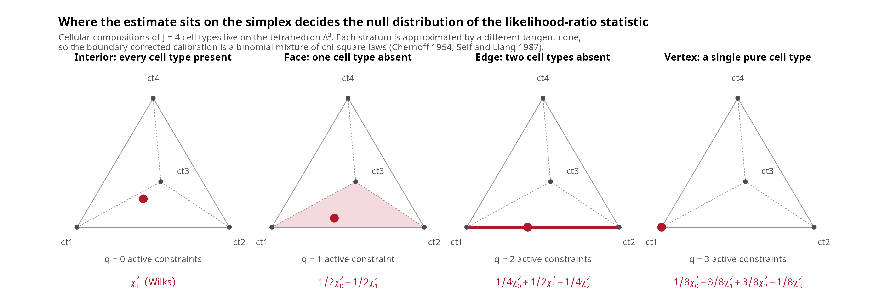

mu_lab <- matrix(
c(20, 40, 15, 40, 20, 25, 25, 30, 35),
nrow = 3,
dimnames = list(paste0("g", 1:3), paste0("ct", 1:3))
)
sig_lab <- array(
0,
dim = c(3, 3, 3),
dimnames = list(rownames(mu_lab), rownames(mu_lab), colnames(mu_lab))
)
for (j in 1:3) {
sig_lab[, , j] <- diag(3) * c(1, 1.5, 1.2)[j]
}
p_lab <- c(0.5, 0.3, 0.2)
y_lab <- drop(mu_lab %*% p_lab)
perm <- c(3L, 1L, 2L)
mu_perm <- mu_lab[, perm, drop = FALSE]
colnames(mu_perm) <- colnames(mu_lab)
sig_perm <- sig_lab[, , perm, drop = FALSE]
dimnames(sig_perm) <- dimnames(sig_lab)
c(
original = loglik_multivariate(p_lab, y_lab, mu_lab, sig_lab),
cell_type_relabel = loglik_multivariate(
p_lab[perm],
y_lab,
mu_perm,
sig_perm
),
gene_shuffle = loglik_multivariate(
p_lab,
y_lab[c(3L, 1L, 2L)],
mu_lab,
sig_lab
)
)
#> original cell_type_relabel gene_shuffle
#> 1.255526 1.255526 -171.954635MLE properties and asymptotic inference for the DeCovarT log-likelihood
2026-08-28
Source:vignettes/DeCovarT-MLE-properties.qmd
DeCovarT estimates a composition \boldsymbol{p}\in\Delta^{J-1} by maximising the Gaussian-convolution log-likelihood
\ell_{\boldsymbol{y}\mid\boldsymbol{\zeta}}(\boldsymbol{p}) = -\tfrac{1}{2}\log\det\boldsymbol{\Sigma}(\boldsymbol{p}) -\tfrac{1}{2} (\boldsymbol{y}-\boldsymbol{\mu}\boldsymbol{p})^{\top} \boldsymbol{\Sigma}(\boldsymbol{p})^{-1} (\boldsymbol{y}-\boldsymbol{\mu}\boldsymbol{p}) +C, \qquad \boldsymbol{\Sigma}(\boldsymbol{p})=\sum_{j=1}^{J}p_j^{2}\boldsymbol{\Sigma}_j . \tag{1}
The derivatives of Eq. 1 are collected in the derivatives vignette. This companion article asks what the resulting estimator is actually entitled to claim. Two answers are uncomfortable and worth stating plainly: the realised log-likelihood is not concave and its maximiser need not be unique, and the Wald intervals of confint.decovart_fit() are undefined on a simplex face. Both have concrete remedies, implemented in lrt_decovart(), confint_profile_decovart(), bootstrap_decovart() and reference_bootstrap_decovart().
Theoretical properties of the DeCovarT MLE
Identifiability
Proposition 1 (Identifiability of the composition) Two compositions induce the same law \mathcal{N}_G(\boldsymbol{\mu}\boldsymbol{p}, \boldsymbol{\Sigma}(\boldsymbol{p})) only if they coincide, provided the mean map is injective on the simplex. Because \mathbf{1}^{\top}\boldsymbol{p}=1 removes one degree of freedom, injectivity of \boldsymbol{p}\mapsto\boldsymbol{\mu}\boldsymbol{p} restricted to \Delta^{J-1} requires the J-1 contrast columns \boldsymbol{\mu}_{\cdot j}-\boldsymbol{\mu}_{\cdot J}, j=1,\ldots,J-1, to be linearly independent, i.e. \operatorname{rank}(\boldsymbol{\mu})=J with G\ge J in the generic case.
Identifiability is a property of the reference, not of the data: no amount of bulk sequencing rescues a signature whose contrast columns are collinear. Two cell types with proportional mean profiles are separated only through \boldsymbol{\Sigma}_j, which is exactly the regime DeCovarT targets — and exactly the regime where the mean-based condition number \kappa(\boldsymbol{\mu}) is a misleading diagnostic (see the feature-selection vignette). Near-collinearity is reported as a warning by fit_decovart() and studied numerically in the appendix simulations.
Label permutation is not a bootstrap
Proposition 1 identifies \boldsymbol{p} given a labelled reference. It does not identify the labels themselves. Write \pi for a permutation of \{1,\ldots,J\}, and write \boldsymbol{\mu}_{\pi}, \boldsymbol{\Sigma}_{\pi} and \boldsymbol{p}_{\pi} for the corresponding reordering of columns, slices and coordinates. The Gaussian convolution is unchanged:
\boldsymbol{\mu}_{\pi}\boldsymbol{p}_{\pi} = \boldsymbol{\mu}\boldsymbol{p}, \qquad \boldsymbol{\Sigma}(\boldsymbol{p}_{\pi};\boldsymbol{\Sigma}_{\pi}) = \boldsymbol{\Sigma}(\boldsymbol{p}). \tag{2}
Theorem 1 (Equivariance under cell-type relabelling) For every permutation \pi of the cell types and every bulk profile \boldsymbol{y},
\ell(\boldsymbol{p};\,\boldsymbol{y},\,\boldsymbol{\mu},\,\boldsymbol{\Sigma}) = \ell(\boldsymbol{p}_{\pi};\,\boldsymbol{y},\,\boldsymbol{\mu}_{\pi}, \boldsymbol{\Sigma}_{\pi}).
In particular the maximised log-likelihood does not depend on how the purified columns are named, so a permutation of those names is not a useful exchangeability null for \boldsymbol{p}.
This is the same permutation symmetry that makes finite mixture models identifiable only up to labelling. Ordinary K-component mixtures are typically identified up to permutation of the component labels, which is distinct from degeneracies such as coincident components or zero mixing weights (Xiao et al. 2025). Under an exchangeable prior the posterior inherits that symmetry: there are up to K! permutation-equivalent representations, and component-specific labelled summaries are meaningless until a relabelling convention is imposed (Grün and Malsiner-Walli 2022; Newman 2025). The canonical frequentist and MCMC accounts are Stephens (2000), who showed that artificial identifiability constraints do not in general solve the inferential problem, Jasra et al. (2005) for the MCMC review, and Papastamoulis (2016) for systematic post-processing.
DeCovarT is not an unlabelled mixture of the bulk. Reviews of transcriptomic deconvolution distinguish reference-based methods, where a named signature supplies the cell-type identities, from reference-free factorisations in which both the signature and the proportions must be inferred (Avila Cobos et al. 2018; Nguyen et al. 2024; Sturm et al. 2019; Gaspard-Boulinc et al. 2025). Writing Y\approx SP with a known, named S already anchors “B cell”, “monocyte”, and so on. Permuting the columns of S together with the corresponding rows of P is algebraically harmless; permuting P alone, or shuffling the names of an already averaged reference X, changes the biological meaning of the fit and is not a valid bootstrap.
Gene permutation is not a bootstrap either. Genes are the coordinates of the expression space. Reordering them jointly in the bulk and the reference changes nothing; reordering them in the bulk alone against a frozen signature destroys the gene-wise pairing and is not a source of sampling uncertainty.
The first two values agree to machine precision; the gene shuffle does not. That is why equivariance_check_decovart() only verifies the labelled relabelling, and why reference_bootstrap_decovart() resamples donors or cells rather than names (Sec. 2.6).
True label switching returns if both S and P are unknown: then SP=(SQ)(Q^{-1}P) for every permutation matrix Q, and component 1 has no intrinsic biological meaning across bootstrap or MCMC runs. The remedy is to align inferred signatures to an external anchor after each run, not to permute genes. Near-collinear cell types are a different failure: if S_{\cdot A}\approx S_{\cdot B}, many splits with p_A+p_B fixed produce almost the same bulk, so individual fractions wander while their sum is stable. Relabelling does not cure that weak identification (Sec. 1.1; the appendix simulations study collinear signatures numerically).
| Operation | Appropriate? | What it tests |
|---|---|---|
| Bootstrap cells within cell type | Yes | Reference-signature uncertainty |
| Bootstrap donors within cell type | Favoured default | Biological / reference-population uncertainty |
| Resample compositions (Dirichlet) | Yes, as a composition sweep | Performance over mixture weights |
| Permute cell-type labels | Only as an equivariance check | Whether \hat P relabels with S |
| Permute genes | No, for ordinary inference | Destroys or trivialises expression structure |
Existence
Proposition 2 (Existence of a maximiser) If every \boldsymbol{\Sigma}_j is symmetric positive definite, then \boldsymbol{\Sigma}(\boldsymbol{p})=\sum_j p_j^{2}\boldsymbol{\Sigma}_j is positive definite for every \boldsymbol{p}\in\Delta^{J-1}, since at least one p_j>0 on the simplex. Hence Eq. 1 is finite and continuous on the compact set \Delta^{J-1}, and attains its supremum.
Two practical consequences. First, positive definiteness is preserved even when some proportions are exactly zero, which is what allows the restricted maximisation of restricted_mle_decovart() to represent a null such as p_j=0 exactly instead of pushing it through a logarithm. Second, the maximiser may lie on the boundary of the compact set, so first-order conditions \nabla\ell=\boldsymbol{0} are necessary only at interior optima.
Uniqueness fails for one observed sample
Existence is not uniqueness. The DeCovarT likelihood is a heteroscedastic Gaussian model: the noise covariance depends on the same parameter as the mean, so Eq. 1 is not the concave objective of an ordinary linear regression. Even in the isotropic case \boldsymbol{\Sigma}_1=\boldsymbol{\Sigma}_2=\mathbf{I}_G with J=2 and without the simplex constraint,
\ell(\boldsymbol{p}) = -\frac{G}{2}\log(p_1^{2}+p_2^{2}) - \frac{\lVert\boldsymbol{y}-\boldsymbol{\mu}\boldsymbol{p}\rVert^{2}} {2(p_1^{2}+p_2^{2})} +C , \tag{3}
whose variance term moves with the coefficients. A single evaluation of the analytic Hessian settles the question.
mean_signature <- matrix(c(2, 1, 1, 1, 2, 6 / 5), nrow = 3)
colnames(mean_signature) <- c("ct1", "ct2")
rownames(mean_signature) <- paste0("gene_", 1:3)
Sigma_iso <- array(c(diag(3), diag(3)), dim = c(3, 3, 2))
bulk <- drop(mean_signature %*% c(0.5, 0.5))
hessian_interior <- hessian_loglik_unconstrained(
p = c(1 / 5, 3 / 10),
y = bulk,
mean_signature_matrix = mean_signature,
Sigma = Sigma_iso
)
round(hessian_interior, 4)
#> [,1] [,2]
#> [1,] -208.8794 -342.2303
#> [2,] -342.2303 -391.7123
c(
determinant = det(hessian_interior),
eigen(hessian_interior, symmetric = TRUE)$values
)
#> determinant
#> -35300.95781 53.93367 -654.52539Every entry of \boldsymbol{y} and \boldsymbol{\mu} is strictly positive, \operatorname{rank}(\boldsymbol{\mu})=2, G=3>J=2, and both covariances are positive definite. Yet the Hessian at the strictly interior point \boldsymbol{p}=(1/5,3/10) has one positive and one negative eigenvalue.
Important 1: One indefinite Hessian disproves global concavity
A negative determinant at a single admissible point is a counterexample, so the unconstrained DeCovarT log-likelihood is not globally concave under the stated positivity and rank assumptions. The same conclusion transfers to the additive log-ratio chart, because a C^{2} diffeomorphism preserves the existence of directions of positive curvature. Consequently:
- a converged optimiser certifies a local maximum at best;
- several starts may reach different modes (see Sec. 3);
- convex-optimisation guarantees — a unique global optimum reachable by descent, and duality certificates — do not apply (Boyd et al. 2004). The Marquardt–Levenberg damping of
marqLevAlg(Philipps et al. 2023, 2021) and the relative-distance-to-minimum criterion of Commenges et al. (2006) buy robustness against saddle points, not global optimality.
Population consistency and efficiency
The failure of concavity is a statement about one realised data set. The population criterion behaves much better. Let \boldsymbol{p}_0 be the truth and define Q(\boldsymbol{p};\boldsymbol{p}_0) =\mathbb{E}_{\boldsymbol{p}_0}\{\ell_{\boldsymbol{Y}}(\boldsymbol{p})\}.
Theorem 2 (Population uniqueness through the Kullback–Leibler divergence) Q(\boldsymbol{p}_0;\boldsymbol{p}_0)-Q(\boldsymbol{p};\boldsymbol{p}_0) = D_{\mathrm{KL}}\bigl( P_{\boldsymbol{p}_0}\,\Vert\,P_{\boldsymbol{p}} \bigr) \ \ge\ 0 , \tag{4}
with equality if and only if P_{\boldsymbol{p}}=P_{\boldsymbol{p}_0}. Under Proposition 1 that happens only at \boldsymbol{p}=\boldsymbol{p}_0, so \boldsymbol{p}_0 is the unique maximiser of the expected log-likelihood.
Eq. 4 is an identifiability statement, not a curvature statement: it survives the non-concavity of Note 1. It is also the engine of the usual asymptotics — consistency, asymptotic normality and efficiency of the MLE (Vaart 2000) — because the local geometry of the divergence is the Fisher information. By the Fisher information metric theorem,
D_{\mathrm{KL}}\bigl( P_{\boldsymbol{p}_0}\,\Vert\,P_{\boldsymbol{p}_0+\boldsymbol{d}} \bigr) = \tfrac{1}{2}\, \boldsymbol{d}^{\top}I(\boldsymbol{p}_0)\,\boldsymbol{d} + o(\lVert\boldsymbol{d}\rVert^{2}) , \tag{5}
with I the expected information of expected_fisher_unconstrained(); the Gaussian case is treated in information-geometric terms by Malago and Pistone (2015). The identity is worth checking numerically, since it ties the plug-in vcov of a DeCovarT fit to the divergence that makes the MLE consistent.
kl_gaussian_convolution <- function(p_ref, p_alt, mu, Sigma) {
mean_ref <- drop(mu %*% p_ref)
mean_alt <- drop(mu %*% p_alt)
cov_ref <- .compute_global_variance(p_ref, Sigma)
cov_alt <- .compute_global_variance(p_alt, Sigma)
precision_alt <- solve(cov_alt)
shift <- mean_alt - mean_ref
0.5 *
(sum(diag(precision_alt %*% cov_ref)) -
nrow(cov_ref) +
drop(t(shift) %*% precision_alt %*% shift) +
as.numeric(determinant(cov_alt, logarithm = TRUE)$modulus) -
as.numeric(determinant(cov_ref, logarithm = TRUE)$modulus))
}
p_reference <- c(0.4, 0.6)
information <- expected_fisher_unconstrained(
p_reference,
mean_signature,
Sigma_iso
)
steps <- c(1e-2, 1e-3, 1e-4)
data.frame(
step = steps,
kullback_leibler = vapply(
steps,
function(h) {
kl_gaussian_convolution(
p_reference,
p_reference + c(h, -h / 2),
mean_signature,
Sigma_iso
)
},
numeric(1)
),
quadratic_form = vapply(
steps,
function(h) {
d <- c(h, -h / 2)
0.5 * drop(t(d) %*% information %*% d)
},
numeric(1)
)
)
#> step kullback_leibler quadratic_form
#> 1 1e-02 2.432446e-04 2.428254e-04
#> 2 1e-03 2.428691e-06 2.428254e-06
#> 3 1e-04 2.428298e-08 2.428254e-08The two columns agree to the order of \lVert\boldsymbol{d}\rVert^{3}, as Eq. 5 predicts.
Equivariance: affine yes, logarithmic no
Proposition 3 (Gene-wise affine equivariance) Let D=\operatorname{diag}(s_1,\ldots,s_G) with s_g\neq 0 and \boldsymbol{m}\in\mathbb{R}^{G}. Applying the same gene-wise map to all three inputs,
\boldsymbol{y}^{\star}=D^{-1}(\boldsymbol{y}-\boldsymbol{m}), \quad \boldsymbol{\mu}^{\star} =D^{-1}(\boldsymbol{\mu}-\boldsymbol{m}\mathbf{1}_J^{\top}), \quad \boldsymbol{\Sigma}_j^{\star}=D^{-1}\boldsymbol{\Sigma}_j D^{-1},
leaves the MLE unchanged, because \mathbf{1}_J^{\top}\boldsymbol{p}=1 makes the recentring cancel and the Mahalanobis residual is invariant.
A z-score computed once per gene from \boldsymbol{\mu} is such a map, which is why fit_decovart(standardise = TRUE) is safe. Per-cell-type or per-sample scaling is not, and neither is a logarithm: \log is concave, so Jensen’s inequality shifts both moments and \log(\boldsymbol{\mu}\boldsymbol{p})
\neq(\log\boldsymbol{\mu})\boldsymbol{p}. Reference-based deconvolution therefore expects a non-log linear scale (Newman et al. 2015): keep raw counts (or a linear normalisation such as CPM/TPM) rather than \log_2 values. Monotonicity of \log preserves gene-wise rankings, but not the convolution MLE. The numerical demonstration lives in the appendix simulations.
Asymptotic inference
Where the estimate sits decides the null distribution
The admissible set is a polytope, and a composition can sit in its interior or on a stratum of its boundary. With J=4 cell types \Delta^{3} is a tetrahedron whose strata are the interior, four triangular faces, six edges and four vertices, corresponding to q=0,1,2 or 3 proportions equal to zero (Figure 1).

ct3. Below each panel, q counts the constraints active at the estimate and the red expression is the resulting null law of the likelihood-ratio statistic: the ordinary \chi^2_1 of Wilks (1938) in the interior, and binomially weighted chi-square mixtures on the boundary strata (Chernoff 1954; Self and Liang 1987).
The reason the calibration changes is geometric. Self and Liang (1987) show that the boundary problem is asymptotically equivalent to estimating the restricted mean of a single multivariate Gaussian draw: the limiting law of the normalised MLE is the distribution of the projection of a Gaussian score onto the tangent cone that approximates the admissible set at \boldsymbol{p}_0. In the interior that cone is the whole of \mathbb{R}^{J-1} and the projection is the identity, recovering classical theory; at a face it is a half-space, at an edge a two-dimensional wedge, and at a vertex a simplicial cone. A visual introduction to tangent and normal cones is available in these ESIEE optimisation notes.
Interior nulls: Wald and profile likelihood
For an interior null H_0:p_j=c with 0<c<1, two statistics are available.
The Wald statistic is the cheap one: (\hat{p}_j-c)/\mathrm{SE}_j with \mathrm{SE}_j the delta-method standard error of vcov_alr_delta(), giving the symmetric interval of confint.decovart_fit(). It costs one matrix inversion, but it linearises the additive log-ratio chart at \hat{\boldsymbol{p}} (Oehlert 1992) and is therefore not invariant to reparametrisation and can place limits outside [0,1].
The profile likelihood-ratio statistic
D_j(c) = 2\bigl\{ \ell(\hat{\boldsymbol{p}}) - \max_{\boldsymbol{p}\in\Delta^{J-1},\,p_j=c}\ell(\boldsymbol{p}) \bigr\} \ \rightsquigarrow\ \chi^{2}_{1} \tag{6}
concentrates out the other J-2 proportions instead. Because a smooth bijection leaves likelihood ratios unchanged, Eq. 6 needs no delta method and respects the simplex automatically. Inverting it gives the asymmetric intervals of confint_profile_decovart().
signature <- matrix(
c(20, 40, 15, 40, 20, 25, 25, 30, 35),
nrow = 3,
dimnames = list(paste0("gene_", 1:3), paste0("ct", 1:3))
)
Sigma <- array(
0,
dim = c(3, 3, 3),
dimnames = list(
rownames(signature),
rownames(signature),
colnames(signature)
)
)
for (j in 1:3) {
Sigma[, , j] <- diag(3) * c(1, 1.5, 1.2)[j]
}
# Eight technical replicates of ONE composition, so the asymptotics of
# Sec. 2.4 are taken in a meaningful direction.
set.seed(11)
replicates <- simulate_bulk_mixture(
signature_matrix = signature,
Sigma = Sigma,
p = c(0.45, 0.35, 0.20),
n = 8
)$Y
round(
confint_profile_decovart(
bulk_expression = replicates,
mean_signature_matrix = signature,
Sigma = Sigma
),
4
)
#> estimate lower upper
#> ct1 0.4546 0.4347 0.4749
#> ct2 0.3559 0.3339 0.3780
#> ct3 0.1895 0.1598 0.2182
lrt_decovart(
bulk_expression = replicates,
mean_signature_matrix = signature,
Sigma = Sigma,
null_value = c(ct1 = 0.30)
)
#> statistic n_boundary df_interior p_value loglik_full loglik_null
#> ct1 235.2243 0 1 4.325696e-53 -0.7007644 -118.3129
#> calibration
#> ct1 chi-square (Wilks)Boundary nulls: chi-bar-square mixtures
The scientifically interesting null is usually absence: H_0:p_j=0 against H_1:p_j\ge 0. Here the parameter may move away from the null in one direction only, so the local parameter space is a half-line rather than a vector space, and Wilks’ theorem does not apply.
Theorem 3 (Boundary calibration) With q constraints active on the boundary and s interior constraints tested simultaneously, and the corresponding information block orthogonal to the nuisance block,
D \ \rightsquigarrow\ \bar{\chi}^{2} = \sum_{i=0}^{q} \binom{q}{i}2^{-q}\, \chi^{2}_{s+i}, \tag{7}
where \chi^{2}_{0} denotes a point mass at zero (Self and Liang 1987, Case 9). For a single active constraint this is the \tfrac{1}{2}\chi^{2}_{0}+\tfrac{1}{2}\chi^{2}_{1} law of Chernoff (1954), so the correct one-sided p-value is \tfrac{1}{2}\Pr(\chi^{2}_{1}>D) — half the naive value.
chi_bar_square_pvalue() evaluates Eq. 7, and lrt_decovart() selects it automatically when a tested value reaches 0 or 1.
set.seed(11)
replicates_absent <- simulate_bulk_mixture(
signature_matrix = signature,
Sigma = Sigma,
p = c(0.5, 0.5, 0),
n = 8
)$Y
lrt_decovart(
bulk_expression = replicates_absent,
mean_signature_matrix = signature,
Sigma = Sigma,
null_value = c(ct3 = 0)
)
#> statistic n_boundary df_interior p_value loglik_full loglik_null
#> ct3 0 1 0 0.5 -5.922388 -5.922388
#> calibration
#> ct3 chi-bar-square (Self-Liang)Warning 2: Three caveats on Eq. 7
- Binomial weights are conditional. They require the active block of the information matrix to be orthogonal to the nuisance block. When several absent cell types share signal, the mixing weights depend on the geometry of the tangent cone; Self and Liang (1987) exhibit a configuration (their Case 8, a nuisance parameter on the boundary) whose limit is not a chi-square mixture at all. Pass explicit
weights, or calibrate by simulation (Sec. 2.5).- Do not encode the null in ALR coordinates. p_j=0 corresponds to \rho_j=-\infty, so the chart cannot represent the hypothesis. The restricted fits substitute the constrained value directly.
- Wald is unusable here. The delta-method covariance is undefined on the face;
vcov_alr_delta()returnsNAwith a warning rather than a plausible-looking number.
Replication is what makes the asymptotics meaningful
Eq. 6 and Eq. 7 are limits as the amount of information about one composition grows. That is a strong requirement in deconvolution.
For each bulk sample i, DeCovarT observes a single G-vector \boldsymbol{Y}_{\cdot i}\sim\mathcal{N}_G(\boldsymbol{\mu} \boldsymbol{p}_{\cdot i},\boldsymbol{\Sigma}(\boldsymbol{p}_{\cdot i})) and estimates its own \boldsymbol{p}_{\cdot i}. Increasing the number of samples N therefore adds parameters exactly as fast as observations, and provides no extra replication for any single \boldsymbol{p}_{\cdot i}. The G genes are not G independent observations either: their dependence through \boldsymbol{\Sigma}(\boldsymbol{p}) is the whole point of the model.
Important 3: Per-sample intervals are plug-in approximations
The default per-sample
vcovandconfintof adecovart_fitare one-observation plug-in quantities. Treat them as descriptive curvature summaries, not as calibrated frequentist intervals.Two things restore the asymptotics, and both are implemented:
- Pool genuine replicates. Supply several bulk columns that really do share one composition (technical replicates, or aliquots of one tissue) through the
bulk_expressionargument oflrt_decovart()/confint_profile_decovart(). Those functions maximise the summed log-likelihood over the replicates, so the limit is taken in the number of replicates.- Simulate instead of appealing to a limit (Sec. 2.5).
Reference uncertainty is a third, separate gap: \boldsymbol{\mu} and \boldsymbol{\Sigma}_j are plug-in estimates from purified populations, and none of the intervals above propagate their sampling variability.
reference_bootstrap_decovart()resamples those profiles (Sec. 2.6); see Vellame et al. (2023) for the analogous accuracy metric in methylation deconvolution.
Parametric bootstrap calibration
The conditional law of the bulk profile is fully specified, so the asymptotic mixture can be replaced by simulation. bootstrap_decovart() draws \boldsymbol{Y}^{(b)}\sim\mathcal{N}_G(\boldsymbol{\mu}\boldsymbol{p},
\boldsymbol{\Sigma}(\boldsymbol{p})), refits, and — when null_value is supplied — regenerates under the restricted MLE so the likelihood-ratio statistic is recalibrated without invoking the 50{:}50 weights (Roch 2024 reviews the concentration tools behind such Monte Carlo guarantees).
The atom at zero is directly observable: under a true boundary null, about half of the replicates should return D=0, because the unrestricted MLE itself falls on the face.
set.seed(5)
calibration <- bootstrap_decovart(
bulk_expression = replicates_absent,
mean_signature_matrix = signature,
Sigma = Sigma,
null_value = c(ct3 = 0),
n_boot = 150
)
c(
observed_statistic = calibration$statistic,
monte_carlo_p = calibration$p_value,
share_of_zero_statistics = mean(calibration$null_statistics < 1e-8),
asymptotic_p = chi_bar_square_pvalue(
calibration$statistic,
n_boundary = 1L
)
)
#> observed_statistic monte_carlo_p share_of_zero_statistics
#> 0.0000000 1.0000000 0.5133333
#> asymptotic_p
#> 0.5000000The observed share of zero statistics is the empirical counterpart of the \tfrac{1}{2}\chi^{2}_{0} atom in Eq. 7. A restricted bootstrap is still only approximate for a composite null, because the nuisance proportions are held at their restricted estimates rather than profiled over; it is exact only when \boldsymbol{p}_0 is fully specified.
Reference-sample bootstrap
bootstrap_decovart() treats \boldsymbol{\mu} and \boldsymbol{\Sigma}_j as known. They are not: both are estimated from purified profiles. reference_bootstrap_decovart() resamples the experimental units of that labelled reference, rebuilds the plug-in moments, and refits, so reference uncertainty appears in the percentile intervals (Efron 1979). Cell-type names stay attached throughout. The three method options match Table 1:
-
donors(default). Cluster bootstrap of donors within each cell type. A donor drawn twice contributes its purified columns twice. This is the favoured option when donor labels exist: it captures biological variation in the reference population rather than treating cells from one individual as independent. -
cells. Column resampling within each cell type, for when donor labels are unavailable. -
dirichlet. Draw \boldsymbol{p}^{(b)}\sim\mathrm{Dirichlet}(\boldsymbol{\alpha}), simulate \boldsymbol{Y}^{(b)} from the Gaussian convolution at the original plug-in moments, and refit. This is a composition sweep, not a confidence interval for one observed bulk.
By default the observed bulk is held fixed for donors and cells (reference uncertainty for a given mixture). Setting regenerate_bulk = TRUE follows the fuller pipeline \text{reference units}\to S^{(b)}\to Y^{(b)}\to\hat{\boldsymbol{p}}^{(b)}.
A related design point for simulation studies, not implemented as an argument here, is to split reference-building cells from pseudobulk-generating cells, ideally at the donor level. Using the same cells, or cells from the same individual, in both the signature and the artificial bulk makes a benchmark unrealistically easy (Sturm et al. 2019; Avila Cobos et al. 2020; Zhao et al. 2026). Nguyen et al. (2024) review 53 bulk methods and stress incomplete references and missing cell types; Avila Cobos et al. (2020) show that omitted types and the expression scale dominate error on pseudobulk mixtures. The simulation generator used to evaluate imply is a useful reference-based template: cell-type parameters are drawn from a multivariate Gaussian, purified-like expression is realised from a Gamma (negative-binomial-like) law fitted to RNA-seq counts, and bulk mixtures are then formed from those profiles with Dirichlet compositions (Meng et al. 2024). That is distinct from DeCovarT’s Gaussian convolution of the bulk; it is a design for how to build a labelled S and a synthetic Y with known p.
set.seed(9)
refs <- lapply(seq_len(ncol(signature)), function(j) {
draws <- MASS::mvrnorm(
n = 12L,
mu = signature[, j],
Sigma = Sigma[, , j]
)
out <- t(draws)
rownames(out) <- rownames(signature)
out
})
names(refs) <- colnames(signature)
donor_ids <- lapply(refs, function(x) {
rep(paste0("d", 1:3), length.out = ncol(x))
})
ref_boot <- reference_bootstrap_decovart(
bulk_expression = replicates,
reference_profiles = refs,
donor_ids = donor_ids,
method = "donors",
n_boot = 40,
itmax = 80
)
ref_boot$interval
#> 2.5% 97.5%
#> ct1 0.4384732 0.4621236
#> ct2 0.3369248 0.3646381
#> ct3 0.1827913 0.2184093equivariance_check_decovart() is the software counterpart of Theorem 1: permute the signature columns, refit, and confirm that \hat{\boldsymbol{p}} merely relabels. It is not the distribution used for confidence intervals.
eq_check <- equivariance_check_decovart(
y = replicates[, 1],
mean_signature_matrix = signature,
Sigma = Sigma,
perm = c(3L, 1L, 2L),
itmax = 80
)
c(
max_abs_diff = eq_check$max_abs_diff,
loglik_diff = eq_check$loglik_diff
)
#> max_abs_diff loglik_diff
#> 3.670703e-09 -4.440892e-16RNA-Sieve: CLT likelihood, Fisher and Godambe
Align notation with Eq. 1. RNA-Sieve writes M, \alpha and b for DeCovarT’s \boldsymbol{\mu}, \boldsymbol{p} and \boldsymbol{y} (Erdmann-Pham et al. 2021). The bulk is the sum of n independent cells. A gene-wise central-limit theorem then supplies a Gaussian likelihood whose variance s_{g}^{2}(M,\alpha,S) depends on \alpha. The estimated mean matrix is itself noisy, \varepsilon_{M,gk}\sim\mathcal{N}(0,s_{gk}/c_{k}), so the design is an errors-in-variables (total-least-squares) problem, not a convolution of J latent type profiles. Genes are treated as independent; coexpression is left for later work.
DeCovarT draws one latent profile per cell type, \boldsymbol{x}_{\cdot j}\sim\mathcal{N}_{G}(\boldsymbol{\mu}_{\cdot j}, \boldsymbol{\Sigma}_{j}), and observes the weighted sum \boldsymbol{y}=\sum_{j}p_{j}\boldsymbol{x}_{\cdot j}, hence \boldsymbol{y}\sim\mathcal{N}_{G}(\boldsymbol{\mu}\boldsymbol{p}, \sum_{j}p_{j}^{2}\boldsymbol{\Sigma}_{j}) with a full gene–gene covariance. The plug-in (\boldsymbol{\mu},\{\boldsymbol{\Sigma}_{j}\}) is treated as known in the likelihood. RNA-Sieve’s n-cell average is a univariate CLT on each gene; DeCovarT’s p_{j}^{2}\boldsymbol{\Sigma}_{j} term is a finite-J multivariate convolution.
The interval constructions differ in the same way. When the CLT model holds, RNA-Sieve uses the inverse Fisher information of (\hat\alpha,\hat n) after a simplex reparametrisation, and reports \chi^{2}_{K-1} ellipsoids. When protocol shift takes the truth outside the model family, they replace Fisher by the Godambe sandwich, which describes Gaussian fluctuations around the Kullback–Leibler projection onto the fitted family. In the correctly specified case the two matrices coincide. Near-collinear cell types make the information nearly singular; RNA-Sieve then subsamples genes.
DeCovarT already has the Fisher analogue: the expected information of the convolution mapped through the ALR (Sec. 2.2; the derivatives vignette). That Wald interval is the cheap interior tool, and it is undefined on a simplex face (Sec. 2.3). The Godambe sandwich would be relevant if the multivariate Gaussian convolution is misspecified (counts, protocol shift, omitted types). It does not replace the chi-bar-square LRT or the restricted parametric bootstrap on the boundary, and it does not replace reference_bootstrap_decovart(), which is the resampling counterpart of RNA-Sieve’s noisy-M term. Implementing a Godambe correction for DeCovarT is an outlook item, not a present interval.
Convergence and boundary diagnostics
Because Note 1 rules out global guarantees, a single optimiser return code carries less information than it appears to. fit_decovart() therefore records three logically distinct claims, and refuses to conflate them:
| Field | Established by | Does not establish |
|---|---|---|
converged (istop / code, rdm, iterations) |
numerical stopping rules met | that the point is a maximum |
local_maximum (small ALR score norm, negative \lambda_{\max}(\mathbf{H}_{\boldsymbol{\rho}})) |
stationarity with the right local curvature | global optimality |
near_boundary (\min_j\hat{p}_j small) |
proximity to a simplex face | optimiser failure |
multimodal (spread of log-likelihoods over random starts) |
evidence for several modes | absence of further modes |
boundary_diagnostics() computes the first three per sample; they are stored in fit$diagnostics.
fit <- fit_decovart(
signature_matrix = signature,
bulk_expression = replicates[, 1:3],
Sigma = Sigma,
itmax = 100
)
do.call(rbind, fit$diagnostics)
#> boundary_distance near_boundary score_norm max_eigenvalue
#> sample_1 0.2159583 FALSE 1.456634e-09 -8.272874
#> sample_2 0.1832324 FALSE 6.637712e-05 -6.249510
#> sample_3 0.1682239 FALSE 1.356752e-04 -5.420747
#> local_maximum
#> sample_1 TRUE
#> sample_2 TRUE
#> sample_3 FALSEEvery sample above converged and every curvature is negative, yet local_maximum is not uniformly TRUE: one iterate stopped with an ALR score norm just above the default score_tol = 1e-4. That is the distinction of Table 2 doing its job rather than a failure — score_tol bounds the score, whereas the solver’s epsilon bounds the objective, so the two should be tightened together.
Note 4: Near-boundary is not failure
Suppose the truth is \boldsymbol{p}_0=(0,0.3,0.7). A fit returning \hat{\boldsymbol{p}}=(10^{-10},0.3001,0.6999) is numerically excellent: the optimiser is correctly approaching a genuine boundary optimum, and an interior ALR solver cannot settle at a finite \boldsymbol{\rho} there. So \min_j\hat{p}_j\ll 1 should not be read as “optimisation failed” but as
the estimate is close to a simplex face, so ALR coordinates and interior Wald inference may be unreliable.
boundary_tolis therefore a statistical warning threshold for Wald linearisation, deliberately far larger than the machine-precision guard that decides whether a logarithm is representable. The two serve different purposes and should not share a value.
Multimodality is the one property that restarts address directly. multistart_decovart() refits from independent Dirichlet(1,\ldots,1) starts and reports the spread of attained optima; fit_decovart(n_starts = ) wires it into the S3 workflow and keeps the best mode.
set.seed(3)
restarts <- multistart_decovart(
y = replicates[, 1],
mean_signature_matrix = signature,
Sigma = Sigma,
n_starts = 6L,
itmax = 100
)
c(
loglik_range = restarts$loglik_range,
multimodal = restarts$multimodal
)
#> loglik_range multimodal
#> 5.393508e-11 0.000000e+00A small range is reassuring but not a proof: a converged code, a tiny relative-distance-to-minimum and a negative-definite local Hessian together support a local maximum, and none of them rules out a second, equally good or better mode elsewhere on the simplex.
Recap: which interval or test to report
The procedures below all target the same composition \boldsymbol{p}\in\Delta^{J-1}, but they rest on different approximations. Table 3 is the practical counterpart of the Wald warning in the derivatives vignette: use the cheapest method that the geometry of the estimate actually supports.
confint.decovart_fit; everything else is an explicit alternative.
| Procedure | What it returns | Calibration | Simplex faces | Replication | Function |
|---|---|---|---|---|---|
| Wald (ALR delta method) | per-sample CI | \mathrm{N}(\boldsymbol{0},I(\hat{\boldsymbol{\rho}})^{-1}) mapped by \mathbf{J}_{\boldsymbol{\psi}} | unusable (NA) |
one bulk column is a plug-in approximation (Note 3) |
confint() / vcov_alr_delta()
|
| Profile likelihood | CI in [0,1] | Wilks \chi^2_1 on the deviance (Wilks (1938)) | stays inside the simplex; endpoints on a face need the next row | pooled replicates, or treat as approximate | confint_profile_decovart() |
| Interior LRT | test of p_j=c\in(0,1) | \chi^2_1 | not for c=0 or c=1 | same as profile | lrt_decovart() |
| Boundary LRT | test of p_j=0 | chi-bar-square \tfrac12\chi^2_0+\tfrac12\chi^2_1 (Chernoff 1954; Self and Liang 1987) | designed for this | same as profile |
lrt_decovart() (automatic) |
| Parametric bootstrap | percentile CI and Monte Carlo p-value | \boldsymbol{Y}^{(b)}\sim\mathcal{N}_G(\boldsymbol{\mu}\boldsymbol{p},\boldsymbol{\Sigma}(\boldsymbol{p})) at the MLE or restricted MLE | automatic (the \tfrac12\chi^2_0 atom is visible) | known plug-in (\boldsymbol{\mu},\boldsymbol{\Sigma}_j,\boldsymbol{p}) | bootstrap_decovart() |
| Reference-sample bootstrap | percentile CI | resample donors (default) or cells within each labelled type, rebuild (\boldsymbol{\mu},\boldsymbol{\Sigma}_j), refit (Efron 1979) | automatic | uncertainty in the reference, not in \boldsymbol{Y} unless regenerate_bulk
|
reference_bootstrap_decovart() |
| Dirichlet composition sweep | percentile of \hat{\boldsymbol{p}} over random mixtures | \boldsymbol{p}^{(b)}\sim\mathrm{Dirichlet}(\boldsymbol{\alpha}), then simulate \boldsymbol{Y} | automatic | performance over compositions, not a CI for one bulk | reference_bootstrap_decovart(method = "dirichlet") |
A short decision rule, in the order the table suggests abandoning the previous row:
- If \hat{\boldsymbol{p}} is interior and several bulk columns share one composition, a profile interval or an interior LRT is the reparametrisation-invariant upgrade of Wald.
- If the scientific null is absence (p_j=0), do not report Wald; use the chi-bar-square LRT or a restricted parametric bootstrap.
- If the dominant uncertainty is the purified reference, use
reference_bootstrap_decovart()withmethod = "donors"when donor labels exist, otherwisemethod = "cells". Do not permute genes or cell-type names: Theorem 1 makes a label shuffle vacuous, and a gene shuffle is not a sampling model (Table 1). Useequivariance_check_decovart()only as a software check. - If the question is performance across mixture weights rather than a CI for one bulk, use
reference_bootstrap_decovart(method = "dirichlet").
Perspectives
Tip 5: Beyond first-order asymptotics
Directions that would strengthen DeCovarT uncertainty quantification, in rough order of implementation cost.
- Godambe sandwich for a misspecified convolution.
RNA-Sievereplaces Fisher by the Godambe information when the CLT model is wrong (Erdmann-Pham et al. 2021) (Sec. 2.7). The same sandwich on DeCovarT’s score would widen Wald intervals under protocol shift without discarding the multivariate covariance. It remains a first-order interior device: faces still need the chi-bar-square LRT or a restricted bootstrap.- Score-test inversion. Inverting a one-sided score test avoids refitting under every candidate value, so it is cheaper than the profile scan of
confint_profile_decovart()while keeping the one-sided boundary geometry.- Higher-order likelihood corrections. Bartlett-type adjustments of the likelihood-ratio statistic, or modified profile likelihoods, improve the \chi^{2} approximation in the small-replication regime that Note 3 describes — precisely DeCovarT’s regime.
- Bayesian compositional models. A logistic-normal or Dirichlet prior on \boldsymbol{p} regularises the boundary: the posterior stays proper where the ALR Wald interval degenerates, and credible intervals are usually more stable near a face. A credible interval is of course not an exact frequentist interval, and the prior must be defensible scientifically. This sits naturally alongside the MAP treatment of the latent profiles sketched in the perspectives vignette.
- Information geometry of the composition. Treating \Delta^{J-1} with the Fisher–Rao metric of Eq. 5 rather than as a subset of \mathbb{R}^{J} would give natural-gradient updates and reparametrisation-invariant confidence regions (Malago and Pistone 2015; Aitchison 1982).
References
Aitchison, J. 1982. ‘The Statistical Analysis of Compositional Data’. Journal of the Royal Statistical Society: Series B (Methodological) 44 (2): 139–60. https://doi.org/10.1111/j.2517-6161.1982.tb01195.x.
Avila Cobos, Francisco, José Alquicira-Hernandez, Joseph E. Powell, Pieter Mestdagh, and Katleen De Preter. 2020. ‘Benchmarking of Cell Type Deconvolution Pipelines for Transcriptomics Data’. Nature Communications 11 (1): 5650. https://doi.org/10.1038/s41467-020-19015-1.
Avila Cobos, Francisco, Jo Vandesompele, Pieter Mestdagh, and Katleen De Preter. 2018. ‘Computational Deconvolution of Transcriptomics Data from Mixed Cell Populations’. Bioinformatics (Oxford, England) 34. https://doi.org/10.1093/bioinformatics/bty019.
Boyd, Stephen, Stephen P. Boyd, and Lieven Vandenberghe. 2004. Convex Optimization. 1st edn. Cambridge University Press; Cambridge University Press. https://doi.org/10.1017/cbo9780511804441.
Chernoff, Herman. 1954. ‘On the Distribution of the Likelihood Ratio’. The Annals of Mathematical Statistics 25 (3): 573–78. https://doi.org/10.1214/aoms/1177728725.
Commenges, Daniel, Helene Jacqmin-Gadda, Cecile Proust, and Jeremie Guedj. 2006. A Newton-Like Algorithm for Likelihood Maximization: The Robust-Variance Scoring Algorithm. arXiv. https://doi.org/10.48550/arxiv.math/0610402.
Efron, B. 1979. ‘Bootstrap Methods: Another Look at the Jackknife’. The Annals of Statistics 7 (1): 1–26. https://doi.org/10.1214/aos/1176344552.
Erdmann-Pham, Dan D., Jonathan Fischer, Justin Hong, and Yun S. Song. 2021. ‘Likelihood-Based Deconvolution of Bulk Gene Expression Data Using Single-Cell References’. Genome Research 31 (10): 1794–806. https://doi.org/10.1101/gr.272344.120.
Gaspard-Boulinc, Lucie C., Luca Gortana, Thomas Walter, Emmanuel Barillot, and Florence M. G. Cavalli. 2025. ‘Cell-Type Deconvolution Methods for Spatial Transcriptomics’. Nature Reviews Genetics 26. https://doi.org/10.1038/s41576-025-00845-y.
Grün, Bettina, and Gertraud Malsiner-Walli. 2022. ‘Bayesian Finite Mixture Models’. In Wiley StatsRef: Statistics Reference Online. Wiley. https://doi.org/10.1002/9781118445112.stat08373.
Jasra, A., C. C. Holmes, and D. A. Stephens. 2005. ‘Markov Chain Monte Carlo Methods and the Label Switching Problem in Bayesian Mixture Modeling’. Statistical Science 20 (1). https://doi.org/10.1214/088342305000000016.
Malago, Luigi, and Giovanni Pistone. 2015. ‘Information Geometry of the Gaussian Distribution in View of Stochastic Optimization’. In Proceedings of the 2015 ACM Conference on Foundations of Genetic Algorithms XIII. Association for Computing Machinery. https://doi.org/10.1145/2725494.2725510.
Meng, Guanqun, Yue Pan, Wen Tang, et al. 2024. ‘Imply: Improving Cell-Type Deconvolution Accuracy Using Personalized Reference Profiles’. Genome Medicine 16 (1): 65. https://doi.org/10.1186/s13073-024-01338-z.
Newman, Aaron, Chih Liu, Michael Green, et al. 2015. ‘Robust Enumeration of Cell Subsets from Tissue Expression Profiles’. Nature Methods 12. https://doi.org/10.1038/nmeth.3337.
Newman, M. E. J. 2025. ‘Fast Sampling and Model Selection for Bayesian Mixture Models’. Statistics and Computing 36 (1). https://doi.org/10.1007/s11222-025-10753-0.
Nguyen, Hung, Ha Nguyen, Duc Tran, Sorin Draghici, and Tin Nguyen. 2024. ‘Fourteen Years of Cellular Deconvolution: Methodology, Applications, Technical Evaluation and Outstanding Challenges’. Nucleic Acids Research 52 (9): 4761–83. https://doi.org/10.1093/nar/gkae267.
Oehlert, Gary W. 1992. ‘A Note on the Delta Method’. The American Statistician 46 (1): 27–29. https://doi.org/10.1080/00031305.1992.10475842.
Papastamoulis, Panagiotis. 2016. ‘Label.switching: An r Package for Dealing with the Label Switching Problem in MCMC Outputs’. Journal of Statistical Software 69. https://doi.org/10.18637/jss.v069.c01.
Philipps, Viviane, Boris P. Hejblum, Mélanie Prague, Daniel Commenges, and Cécile Proust-Lima. 2021. ‘Robust and Efficient Optimization Using a Marquardt-Levenberg Algorithm with R Package marqLevAlg’. The R Journal 13. https://doi.org/10.32614/rj-2021-089.
Philipps, Viviane, Cecile Proust-Lima, Melanie Prague, Boris Hejblum, Daniel Commenges, and Amadou Diakite. 2023. marqLevAlg: A Parallelized General-Purpose Optimization Based on Marquardt-Levenberg Algorithm.
Roch, Sebastien. 2024. Modern Discrete Probability: An Essential Toolkit. 1st edn. Cambridge University Press. https://doi.org/10.1017/9781009305129.
Self, Steven G., and Kung-Yee Liang. 1987. ‘Asymptotic Properties of Maximum Likelihood Estimators and Likelihood Ratio Tests Under Nonstandard Conditions’. Journal of the American Statistical Association 82 (398): 605–10. https://doi.org/10.1080/01621459.1987.10478472.
Stephens, Matthew. 2000. ‘Dealing with Label Switching in Mixture Models’. Journal of the Royal Statistical Society Series B: Statistical Methodology 62 (4): 795–809. https://doi.org/10.1111/1467-9868.00265.
Sturm, Gregor, Francesca Finotello, Florent Petitprez, et al. 2019. ‘Comprehensive Evaluation of Transcriptome-Based Cell-Type Quantification Methods for Immuno-Oncology’. Bioinformatics (Oxford, England) 35. https://doi.org/10.1093/bioinformatics/btz363.
Vaart, A. W. van der. 2000. Asymptotic Statistics. Cambridge University Press.
Vellame, Dorothea Seiler, Gemma Shireby, Ailsa MacCalman, et al. 2023. ‘Uncertainty Quantification of Reference-Based Cellular Deconvolution Algorithms’. Epigenetics 18. https://doi.org/10.1080/15592294.2022.2137659.
Wilks, S. S. 1938. ‘The Large-Sample Distribution of the Likelihood Ratio for Testing Composite Hypotheses’. The Annals of Mathematical Statistics 9 (1): 60–62. https://doi.org/10.1214/aoms/1177732360.
Xiao, Xingyao, Sophia Rabe-Hesketh, and Anders Skrondal. 2025. ‘Bayesian Identification and Estimation of Growth Mixture Models’. Psychometrika 90 (2): 442–75. https://doi.org/10.1017/psy.2025.11.
Zhao, Yifan, Brian E Vestal, and Camille M Moore. 2026. ‘Evaluating Reference-Mixture Matching in Cell-Type Deconvolution with Single-Cell RNA-seq References’. Briefings in Bioinformatics 27 (2): bbag184. https://doi.org/10.1093/bib/bbag184.